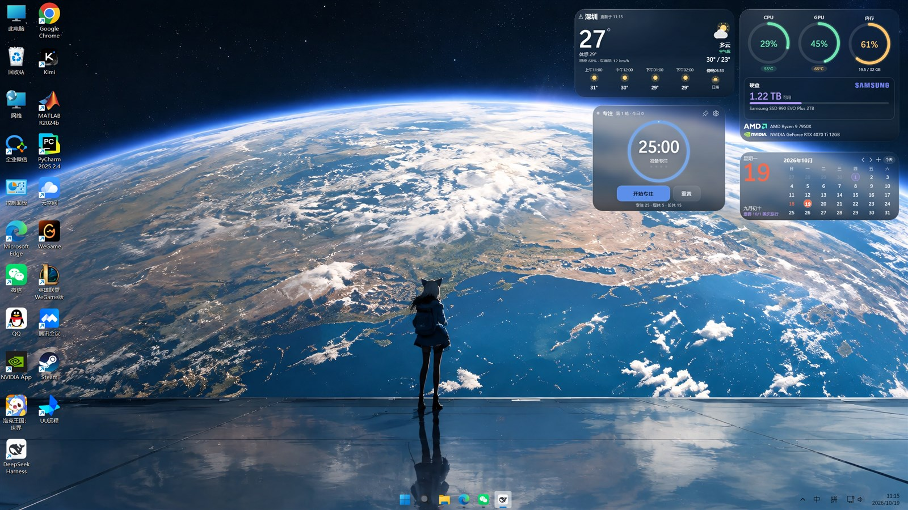
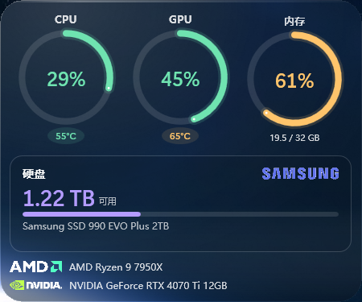
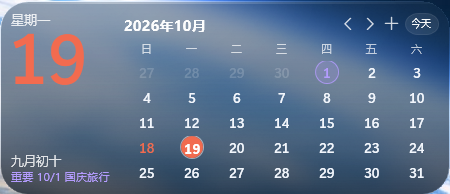
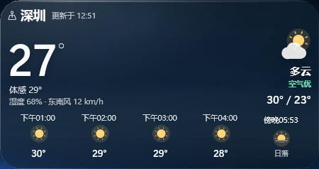
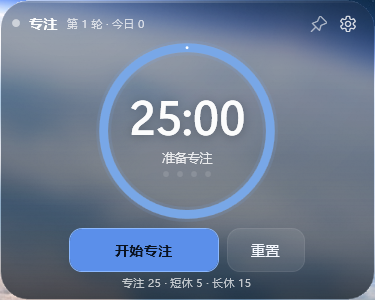
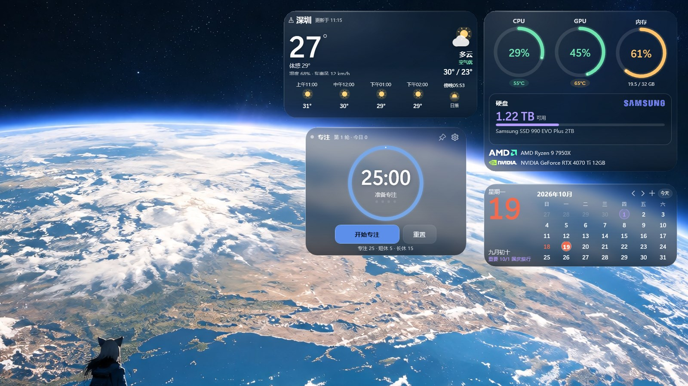

▦
性能监视
CPU / GPU / 内存三圆环，温度、占用、完整型号与显存；硬盘可用空间按整块物理盘统计。
性能、日历、天气、番茄钟，四张会随壁纸取色的磨砂玻璃卡片。 不挡图标、不抢焦点，安静地待在桌面右侧，需要时一抬眼就能看到。

桌面组件 1.0 · 实际桌面效果不是又一个监控悬浮窗，而是一套为桌面设计的轻量信息层。
CPU / GPU / 内存三圆环，温度、占用、完整型号与显存；硬盘可用空间按整块物理盘统计。
左侧大日期、农历和节日，右侧月视图。可添加每年重复的生日、纪念日，紫色标记并在左侧提醒。
默认按电脑 IP 定位城市，也可选常用城市或联网搜索；每 5 分钟自动刷新，带逐小时和日落/日出。
专注 / 短休 / 长休均可在 1–60 分钟之间自由调节，圆环倒计时、今日轮次、托盘快捷控制；点图钉可置顶显示。
读取当前壁纸，按卡片位置裁剪模糊，叠上环境色、噪点和 1px 描边，不是死板的灰色半透明。
编辑模式下拖动卡片，吸附屏幕边缘、中线和其它卡片；支持右侧对齐、整体缩放和配置记忆。

三个圆环显示 CPU、GPU、内存占用，下面直接给出温度、显存和完整硬件型号。
日历用左侧大日期 + 右侧月视图，节日直接写在日期旁边；天气用逐小时横向排布；番茄钟只保留真正需要的按钮。




锁定时卡片位于桌面层，除了按钮以外鼠标穿透，不会挡住桌面图标。右键托盘图标进入编辑模式，拖到顺手的位置，再锁回去。
下载 桌面组件-Setup.exe，双击运行。
在安装界面选择安装位置，可创建桌面快捷方式。
安装完成后自动启动，四张卡片出现在桌面右侧。
双击安装包后，在“安装目录”输入框里直接修改路径，或点“浏览…”选择文件夹。默认安装到当前用户的本地程序目录，不需要管理员权限。
Windows 设置 → 应用 → 已安装的应用 → 桌面组件 → 卸载；也可以直接运行安装目录里的 卸载.ps1。
这是未购买代码签名证书的安装程序常见的 SmartScreen 提示。点击“更多信息”→“仍要运行”即可。
CPU / GPU 温度需要管理员权限。托盘右键 →“以管理员身份重启”，或右键 exe 选择“以管理员身份运行”。没有权限时，占用率、硬盘、天气仍可正常显示。
卡片显示的是整块物理硬盘的可用空间，会汇总同一块盘上的 C、D 等分区，所以数值通常比“此电脑”里单个 C 盘大。
Windows 10 1809 及以上、Windows 11，64 位。客户端为 self-contained .NET 8；安装程序使用 Windows 自带的 .NET Framework 4.8，无需额外安装运行时。